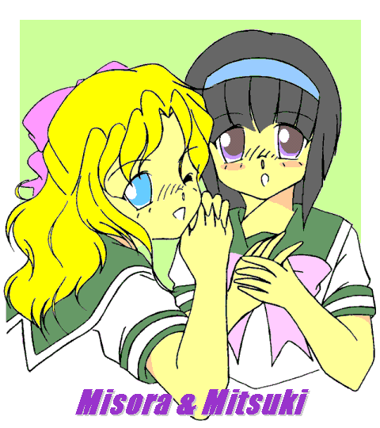

今日も、雨。
美空の家、『喫茶 スナック ブルーコスモス』は、しっとりした雨に濡れて、建っている。
美月は、呼び鈴を押した。
「はーい。」 ドアを開けて美空が出てくる。
美空は１７歳の姿に戻り、美月の貸したセーラー服を着ていた。
グリーンの襟、グリーンのスカート、袖のライン。
白い肌と金の髪、青の瞳が、制服にあまりにも似合っている。
とても昨日まで 白川 宇宙（そら）・男 だったとは思えない。
「おはよう。 美月。」
「美空、あなた、………本気で、今日から学校に行くの？」
「ん。 行くわよ。」
「だって、今日一日休めば、明日は土曜日だよ。 ３日かけて、いろいろ考えられるのに。」
「考えたってしょうがないわ。 とりあえず当たってみる！」
美空は両手を胸の前に立て、こぶしを握って見せた。
「く、砕けないでよね？」
「やめてよ。 縁起でもない。」
水色の傘を差して歩き出した美空に、美月が並ぶ。
鮮やかにアジサイが咲きこぼれる小道。
並んで歩きつつ、美月はちょっと機嫌が悪いようだ。
いきなり美空に突っかかった。
「美空、あなた、スカート、どんなはき方してきた？」
「普通、だと思うわよ。 腰で止めて、ベルトして。」
「じゃあ、どうして。」
言いながら、美月は並んで揺れるスカートの裾を指差した。
「同じ身長で、同じ制服で、裾の高さがわたしと５ｃｍも違うのよ！」
それは、美空のほうが足が長いから。
「遺伝だもの、仕方ないわよ。」
「そうだけどさ。 ずーと女の子やってきて、それなりに努力も苦労もしてるわけよ、わたしは。」
美月は、きれいにとかした髪をなでつけながら、言った。
「それが、昨日ぽっと女になったばかりの美空に、なにもかも負けてるっていうのは、なんかね。」
美空の青い瞳を見て、ぽつりと。
「うらやましいよね。」
「そういうものなの？」
美空の反応は薄い。 だいたい、そらの記憶に、外見で目立って得をしたことは殆んどない。
「そういうものよ。 美空がにこにこしてれば、良いことがいっぱいあるよ、きっと。」
学校に着けば分かるよ、と、美月は笑った。
「まったく、なんだっていうんだ。」
雨の中、校門前で生徒たちに挨拶を返しながら、松島は途方に暮れていた。
頭痛の種は、ついさっき掛かってきた一本の電話である。
「今日からうちの息子は、女の子になりましたの。 どうぞよろしくお願いします。」
って、あの母親は、担任の俺になにをどうしろというのだろう？
いやその前に、女の子になりました、って、なんなんだ?
まずは教室に入る前に捕まえて、話を聞いてみよう。
そう思って松島はここに立っている、のだが。
果たして、うまく見つかるだろうか？
「いた。」
柿崎美月とならんで歩いてくる、長身、金の髪、青い瞳の少女。
大人向けのＤＶＤに登場するような、高校生としては非現実的なスタイル。
間違えようも見逃しようもない。
なにがそんなに楽しいんだか、ふたりでくぷくぷと笑いあっている。
クラムボンか、と、胸のうちでつぶやいてみたりして。
しかし。 ………あれを、どうしろと？
松島の苦悩は深まるばかりである。
美月が、先に松島に気付いた。
歩み寄ってくる。
「おはようございます。 先生、あの。」
「おはよう。 電話を頂いてるよ。 白川、えーと、美空、だったかな。」
「はい、先生。 おはよーございます！」
にこにこと挨拶されてもなぁ。
心の中で肩をすくめて、松島は二人に言った。
「だけど、どういうことなのか、ちょっと先生に教えて貰いたいのだけど。」
………というわけで。
始業前のあわただしい時間ではあるが、３人は生徒指導室に立ち寄った。
とはいえ。
「どうしてそんなことに？」
「まったくわかりません！」
「本当に、白川なんだな？」
「はいっ！」
「本当に、女になったのか？」
「………脱ぎましょうか？」
「………頼むからやめてくれ。 俺が逮捕される。」
あとは、なにも得られることはなかったのだ。
「で、俺はなにをどうしたらいいんだ？」
松島は椅子の上で足を組んで、顔に手を当てた。
考える人、というより、絶望、というタイトルが似合うような表情である。
美空は元気よく、あかるく言った。
「だいじょうぶです、なるようになりますって！」
松島は額を押さえて、腕時計を見た。
自分もおなじ経験のある美月が、気の毒そうに松島を見ている。
始業までに、もう時間はあまりない。
この娘のあかるさに、賭けてみるしかないのか。
松島は立ち上がった。
「先生は、白川と一緒に後から行こう。 柿崎、教室に行ってなさい。」
「はい。 美空、あんまり迷惑かけちゃだめだよ？」
「なんにも迷惑かけてないわよ。 ね、先生？」
不始末に伴う俺の転勤だって、きっと『なるようになる』のうちだよなぁ。
松島の不安はいっこうに晴れなかった。
追放先が、長崎市内だと良いな。 せめて、離島ではありませんように。
で、場面は始業前の教室に移る。
「あー。 みんな、ちょっと座って聞いてくれ。」
松島が入ってきた。 美月は先に席に着いているが、美空の姿はまだない。
「新しい友達を紹介する。 違うな。 ちょっとややこしいんだ。 まあ、入っておいで。」
美空が、そっとドアを開けて入ってきた。
金色の髪がまぶしい。 緑のスカートが揺れる。
おおお、どよどよ、と声があがる。
「おはようございます。 ややこしいことになっています。 白川 美空です。」
ガタッ、と、誰かの机が鳴った。 他は、静まり返っている。
「昨日までは、白川 そら、でしたが、事故でこんなことになりました。
そらの記憶はあるので、クラスのことはよく分かっています。
でも、あたしの人格はそら君と違うんです。
だから、そら君の記憶を持った別の女の子、だと思ってください。」
わけわかんねーよ、とか、なにいってんの、とか、ひそひそ声が湧いてくる。
「本当に複雑で、あたし自身もよく事情が分かってません。 すみません。」
ぺこり、と一礼して、顔を上げ、にこっ、と笑顔を見せる。
これは美月の入れ知恵だ。
「えー、とにかく新しいクラスメイトとして、どうぞ、よろしくお願いします。」
わずかに間をおいて、美月が、ほどよい加減でぱち、ぱちと拍手を送る。
拍手は教室中に広がり、なんとか、美空はクラスに受け入れられた形になった。
「そういうわけだ。 まあ、仲良くやってくれ。」
松島もなんとか肩の荷が下りたようだ。
救われたような表情で、授業の教師と入れ替わりに出て行った。
次の休み時間。
「ちょっと、美空。」
美月が教室の隅のほうで手招きするので、美空はそちらへ行った。
「なによ。 あなた、そら君と別の人格だったの？」
「んー、よく分かんない。」
「だって、さっきの説明。」
「それがいちばん分かってもらえるかな、って思ったの。 それだけよ。」
さらり、と言ってのける。
「………美空って、神経、ふといよね。」
「そう？ ありがとう。」
「ほめたのが半分、皮肉が半分だよ。」
「半分ほめられれば上出来よ。 こんな、訳の分からない話。」
「あの、白川さん、僕のことは覚えてる？」
その次の休み時間、まず声を掛けてきたのは、浅田 正樹だ。
「正樹くん。 もちろんよ。 そらのいちばん仲の良い友達。」
美空の気持ちも、すこし複雑だ。 昨日は気軽に「正樹」と呼んでいたのだから。
「そうだ、ゲーム、あたしが借りたままでいい？ 面白いんだけど、進まなくって。」
「あ、もちろん。 楽しんでもらえるなら、何より。」
ちょっと下を向いて答える。
今の美空は、正樹にはちょっとまぶしすぎるようだ。
「本当に、そらの記憶があるんだね。」
「うん。 記憶だけじゃなくて、嗜好とかも似てると思う。」
「でも、別の人格なんだよね。」
ダニエル・キイス先生に感謝。
ちょっと前なら、誰にも分かってもらえなくって、精神科行きよね。
……ま、今の状態だって、精神科の患者の資格は十分か。
美空はそっと苦笑した。
級友との会話もぽつぽつと始まり、美空の学校生活は、なんとか軌道に乗ったかに見えた。
しかし。 面白く思わない者も、いたのだ。
昼休みも終わりに近付いた。
美空は、一人で窓越しに雨を見ている。
「おい、白川。 ちょっと付き合えよ。」
乱暴な声がかかった。 美空は、しかたなく振り向いた。
ニヤニヤしながら立っているのは、黒沢だ。
中学の頃、そらをいじめた首謀者。
高校になってそらの背が伸びてからは、手を出されることもなかったのだが。
「黒沢君。 なんの用？ あたしは、教室にいたいんだけど。」
「け、気持ち悪いしゃべり方しやがって。 ムカつく野郎だな。」
「野郎じゃないわよ。 失礼ね、ほっといてよ。」
「野郎じゃねえかよ。 白川なんだろ。 来いよ。 そのしゃべり方、矯正してやるよ。」
美空の細い腕をつかんで、乱暴に引っ張る。
「いたい！ なにするのよ。」
美空は、おおきな声をあげた。
しかし、教室内に助けてくれるものはいない。
美月は、教室にいなかった。
黒沢の悪友たちが、いつの間にか周りを囲むように陣取っている。
あたしが、一人でやるしかないのか。 仕方なく、美空は立ち上がった。
「ついて行くから、離しなさいよ。」
だが、黒沢は、手を離さない。
そのまま美空の手をぎゅうぎゅうと引っ張って、教室を出ていった。
しばらくして帰ってきた美月は、教室内の異様な雰囲気に気がついた。
美空が、いない。 黒沢もいない。 美月は、二人の関係を知っている。
「ね、美空、どこにいったか、分かる？」
近くの女生徒に小声で聞いた。
「あっちの方に、黒沢君と一緒に………。」
「ありがとう。」
美月は、すっと教室を出た。
黒沢と美空は、誰もいない体育館に来ていた。
「ちょっと、どこまで連れて行くのよ。」
さすがに身の危険を感じて抵抗する美空を、黒沢は用具倉庫に突き入れた。
「きゃん！」
美空の悲鳴が、天井にこだまする。
「けっ、情けねえな、白川。」
「なにがよ。」
「女みたいな声で、女みたいにしゃべりやがる。 しかも、セーラー服なんか着てきやがって。」
「しょうがないじゃない、今は女だもの。 事故だって言ったでしょう。 聞いてなかったの？」
「おれは認めねえ。 自分で確かめねえとな。」
黒沢は、残忍な笑みを浮かべ、美空をにらみつけて、言った。
「服を脱いで、そこのマットで足を広げな。」
「な。 あなた、何をバカ………ぐうっ！」
言いかけた美空の腹部に、黒沢のこぶしが、深くめり込んだ。
美空はとっさに腹筋に力を入れたが、今の細い体で防御など出来るはずもない。
そらだった時と比べ物にならない、痛みと、衝撃。
意識を保つのがやっとで、その場に崩れるようにへたり込む。
「手間をとらせんじゃねえよ。 さっさと脱げ。」
黒沢の冷たい声がひびく。
「………わかった、わよ。」
まだ、げほっ、と咳きこみながら、美空は立ち上がった。
「脱ぐから、ちょっと待ってよね。」
言いながら、精神を集中する。
できる自信はないけど、やってやるわ。
魔法を！
「Wake up.」
美空のつぶやきに呼応して、ペンダントが青い光を放つ。
その力を感じ、留めながら、次の呪文を重ねる。
「Get Ready.」
ピアノで、和音を重ねていくようなイメージ。
昨夜考えたばかりの、美空オリジナル、「トライスペル」。
美空の体全体が周りの空気を巻き込んで、青く、強く、光をまとう。
薄暗い倉庫に、空の色の粒子が満ちる。
「なんだ、お前、まだ抵抗すんのか！」
異常を感じた黒沢が、わけも分からないまま殴りかかった。
そのこぶしよりも、一瞬早く。
「Fire ！」
美空が前に伸ばした両手から、青い光が、ほとばしった。
美月は、目撃情報を頼りに美空を追っていた。
「待ってて、美空。 早まらないでよ。」
願いつつ、息を切らして走る。
「美空！ いるの？」
誰もいない体育館に向かって声をあげる。
答えのかわりに、美月は、青い光が壁に反射するのを見た。
「いやあああっ！」
悲鳴が上がった。 美空の声ではない。
「間に合わなかった？」
美月は、あわてて用具倉庫に駆け込んだ。
用具倉庫では、美空が、殴られた腹部を抑えてしゃがみこんでいた。
そして、その前には。
だぶだぶの男子制服を着たショートヘアの女の子が、放心状態で座り込んでいた。
かわいい、というよりは、ごつい感じだが、顔の造作や大きな胸は、間違いなく、女だ。
右手で胸をおさえ、左手をズボンの前に突っ込んで、固まっている。
「美月。 やったよ、あたし。」
痛みをこらえて笑ってみせる美空に、美月は、きびしい表情で近付いた。
パアン。
美空の頬が、平手で打たれて、高い音を立てた。
「なにすんのよ、美月。」
おどろいた美空が頬を押さえて抗議したが、美月は強い口調で言った。
「もともとあんたが悪くないのは分かってるわよ。 でも、これは何よ！」
少女を………黒沢を差した指が、震えている。
本気で、怒っている。
「言いたいことは山ほどあるけど、とにかく、もとに戻しなさい！」
「美月………。」
「もとに！ 戻しなさい！ いますぐ！！！」
美空は、しぶしぶ黒沢に手をかざした。
「やっぱり、やだ。」
「み！ そ！！ ら！！！」
「………わかったわよ。 Release. 」
光が通り抜けると、そこにあったのは、もとの黒沢の姿。
ごそごそ、と、自分の体を確認し、安堵の表情を浮かべた。
「黒沢君。 」
美月は、黒沢の隣にしゃがみ、目線を合わせた。
「お願い。今日、ここで見たこと、他の人に言わないでいてくれる？」
「言えばいいのよ。」 美空が横槍を入れる。
「力ずくで同級生を犯そうなんてヤツ、男でいたら周りの迷惑でしかないわ。
みんなが知ってれば、あたしは遠慮なく魔法を使えるもの。」
腹部を押さえてかがんだまま、燃えるような青の瞳で激しく睨みつける。
黒沢は、きまり悪そうに肩をすくめた。
「こんなヤツ、幼稚園から女の人生をやり直させてやればいい！ そうしようよ、美月。」
ぎく。 おどおどと、助けを求めるように美月を見る、黒沢。
「美空は、ちょっと黙ってて。」
美月がセリフを引き取った。
「黒沢君。 お願いだから、お互いのために、誰にも何にも言わないで。
美空の言ったこと、はったりじゃないの。
黒沢君が黙っててくれれば、なんにも困ったことにならないんだから、ね？」
こくこくこく。 必死でうなずく黒沢。
「分かったら、行って。 わたしたちは、ちょっと話があるから。」
黒沢が行ってしまうと、美月は美空に並んで座り込んだ。
しみこんだ汗のかびた、倉庫の独特の匂い。
美月は、まだ息を切らしている。
「美月。 事情も聞かずに平手打ちは、ひどいんじゃない？」
「聞かなくても、見ればわかるわよ。 おなか、大丈夫？ 殴られたんでしょう。」
「そこまでわかってて、どうして止めるのよ。 あたしが犯された方が良かったの？」
「そうじゃない。 それは違うんだけど。 でもね。」
並んで倉庫の壁を向いたまま、呼吸を整えて、美月は言った。
「美空。 あなたの魔法は、何があっても他人に見せちゃいけないの。
あなたのお母さんだって、他人に使ったことなんかないでしょう。
人は、あなたが思うよりもずっと、魔法を怖がるよ。
あなたは、ここに居られなくなる。
わたしは、美空がこの学校を、この町を、追い出されるのなんか、絶対にいやだからね！」
しばらくの沈黙のあと。
「美月。 心配かけたわね。」
美月は、美空の素直な言葉に、ほっとしたのだが。
「でも、美月。 さっきは本当に危なかったのよ。 あたしは、悪くない。
それに、だいたいあたしは、ああいうことをするヤツは許せない。
被害者があたしでなくて、美月でも、他の誰かでも、やっぱりあたしは魔法を使うと思うわ。」
「………頑固ね。」
「いじめを見て、見ないふりなんて出来ないわよ。 あたしは、痛みを知ってるからね。」
「美空は、強いね。 そういうとこ、わたしは、好きだよ。」
美月は前を向いたまま、言った。
「だから、見て見ぬ振りをしろ、なんて言わないわよ。
でもね。 魔法は使っちゃダメ。
あなたと、わたしのために、それだけは約束して。」
「………わかったわよ。 約束する。」
「………本当に、守る気がある？」
美月は、不意に美空の瞳を見つめた。
すっ、と目をそらす美空。
「………状況による。」
「それじゃ、どこまで行っても平行線じゃないの。 どうすんのよ。」
やわらかな雨が、倉庫の小さな窓をたたく。
静かな音、やわらかな空気が、用具倉庫にいてさえ、なんだか心地良い。
二人は、顔を見合わせた。
そして、どちらからともなく、一緒に笑い出した。
「くっくっく。」
「ふふふふっ。」

＊＊ 広告 ＊＊
リアルタイムで読んで下さっているお客様限定！
美空と美月と筆者のラクガキ、いろんな方にメーワクかけつつ驀進中！
詳しくは下の □ 感想はこちらに □ を、今すぐＣＬＩＣＫ！
「だいじょうぶ、なんにも怖いことはないから！」
「美空が言うとなんだか余計に怪しいんだけど？」
「書き込みもハンドルネームだけで出来るから、参加してね！」
「覗くだけでも楽しいですよ。 よろしくお願いします！」
□ 感想はこちらに □